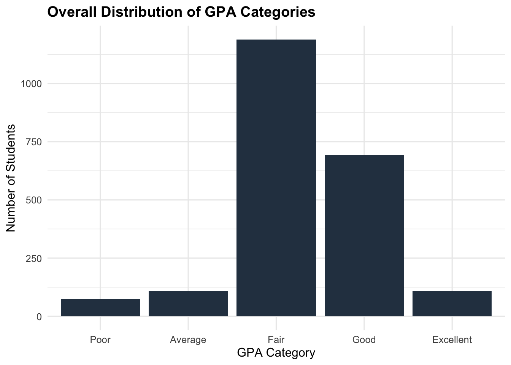
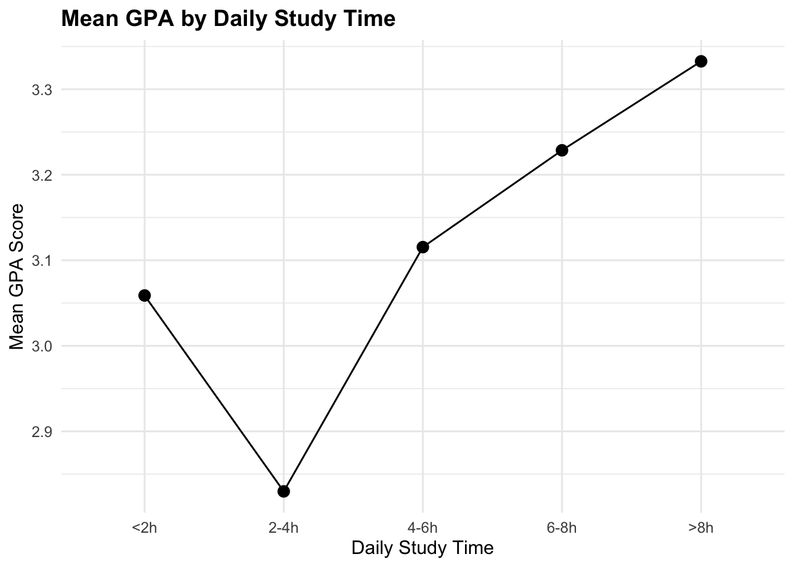
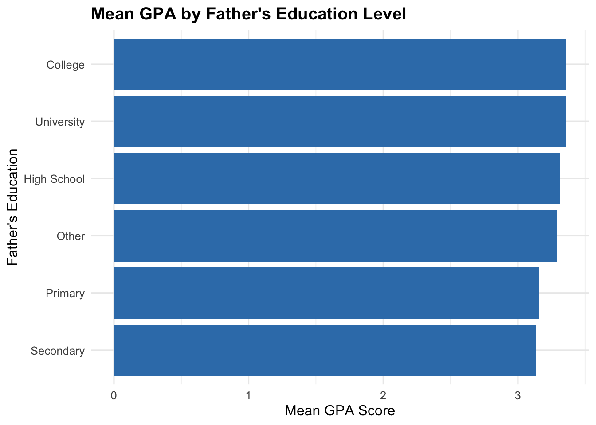
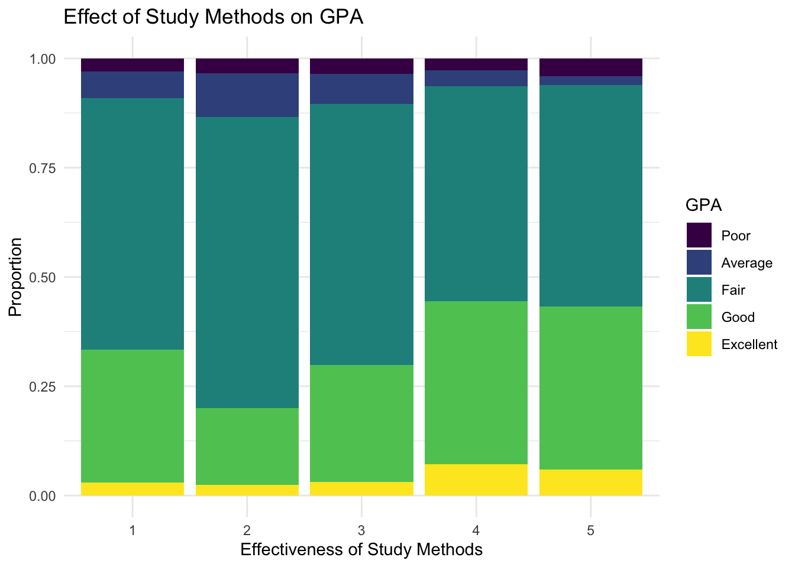
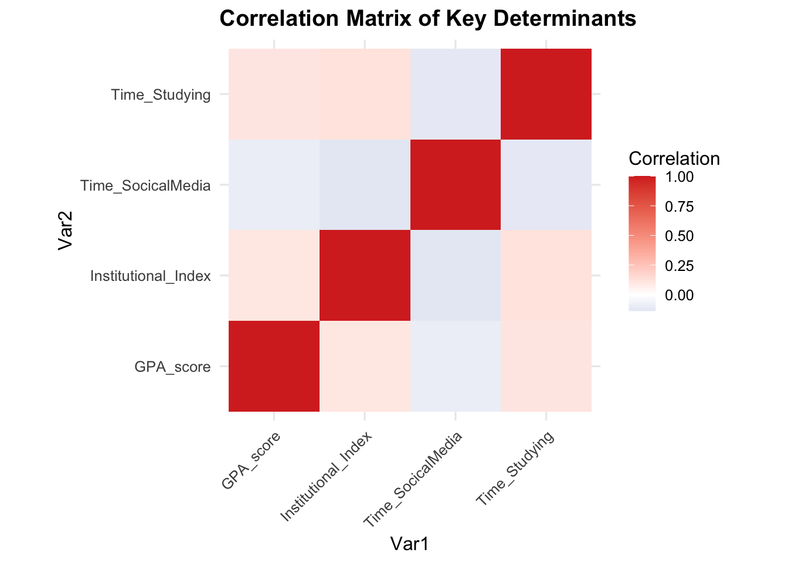
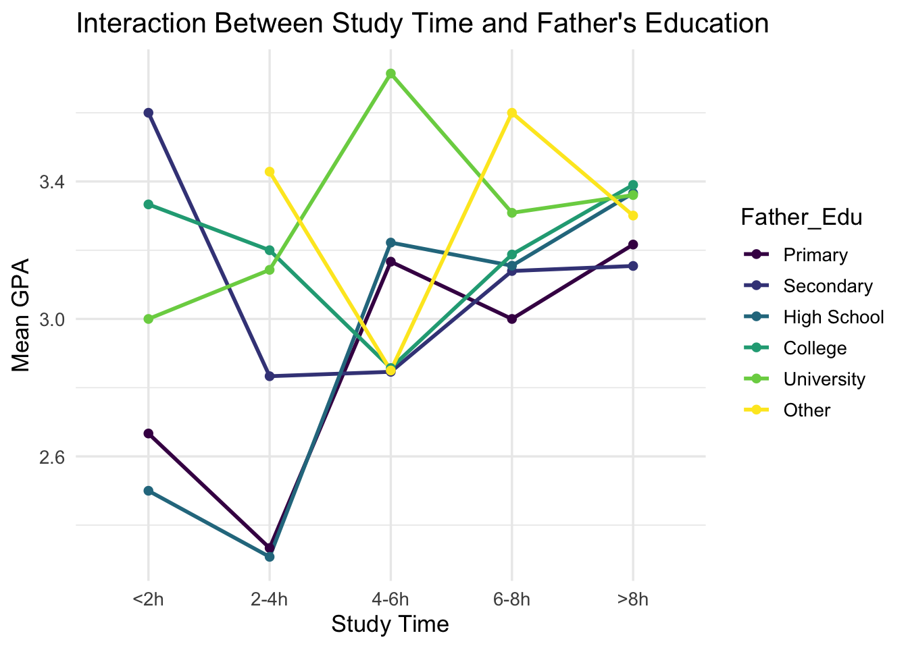
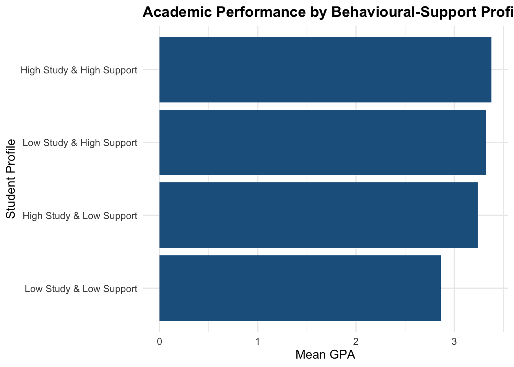
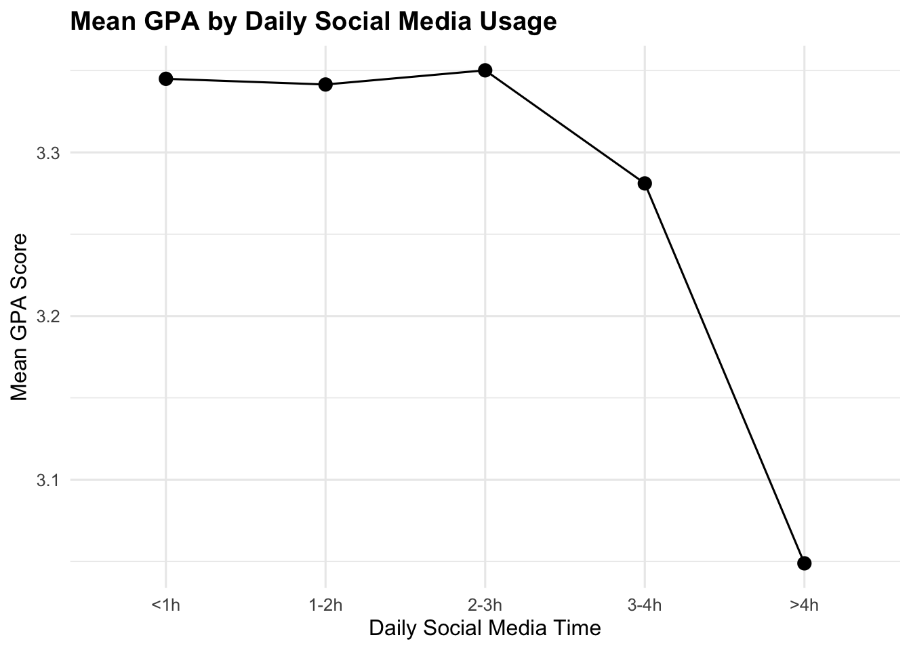

library(pacman)
pacman::p_load(tidyverse, reshape2, ggthemes, patchwork, scales)
theme_set(theme_minimal(base_size = 13))Take-Home Exercise 1: Visual Analytics of Factors Affecting Learning Outcomes
1. Overview
This analysis investigates behavioural, socioeconomic, and institutional factors associated with students’ academic performance at the University of Education, Vietnam National University, Hanoi. Using visually driven survey analysis methods, the study moves beyond descriptive comparisons to evaluate ordinal trends, interaction effects, and structural relationships influencing GPA.
2. Getting Started
Load Packages
Import Data
df <- read_csv("data.csv", show_col_types = FALSE)3. Data Pre-processing
Convert Variables to Ordered Factors
df <- df %>%
mutate(
Year = factor(Year, levels = 1:5,
labels = c("First","Second","Third","Fourth","Graduated"),
ordered = TRUE),
Gender = factor(Gender, levels = 1:2,
labels = c("Male","Female")),
GPA = factor(GPA, levels = 1:5,
labels = c("Poor","Average","Fair","Good","Excellent"),
ordered = TRUE),
GPA_score = as.numeric(GPA),
Time_Studying = factor(Time_Studying, levels = 1:5,
labels = c("<2h","2-4h","4-6h","6-8h",">8h"),
ordered = TRUE),
Time_SocicalMedia = factor(Time_SocicalMedia, levels = 1:5,
labels = c("<1h","1-2h","2-3h","3-4h",">4h"),
ordered = TRUE),
Father_Edu = factor(Father_Edu, levels = 1:6,
labels = c("Primary","Secondary","High School",
"College","University","Other"),
ordered = TRUE),
Adapt_Learning_Uni = factor(Adapt_Learning_Uni, levels = 1:5, ordered = TRUE),
Study_Methods = factor(Study_Methods, levels = 1:5, ordered = TRUE),
SupportOf_Uni = factor(SupportOf_Uni, levels = 1:5, ordered = TRUE),
SupportOf_Lec = factor(SupportOf_Lec, levels = 1:5, ordered = TRUE),
Facilitie_Uni = factor(Facilitie_Uni, levels = 1:5, ordered = TRUE),
Quality_Lecturer = factor(Quality_Lecturer, levels = 1:5, ordered = TRUE),
TrainingCurriculum = factor(TrainingCurriculum, levels = 1:5, ordered = TRUE)
)Construct Institutional Support Index
df <- df %>%
mutate(
Institutional_Index =
rowMeans(select(., Adapt_Learning_Uni,
Study_Methods,
SupportOf_Uni,
SupportOf_Lec,
Facilitie_Uni,
Quality_Lecturer,
TrainingCurriculum) %>%
mutate(across(everything(), as.numeric)),
na.rm = TRUE)
)All coded survey responses were transformed into ordered factors to preserve ordinal meaning. GPA was additionally converted into a numeric score to enable mean-based trend analysis. A composite Institutional Support Index was constructed using row-wise means of seven institutional and academic support variables, producing a continuous measure ranging from 1 to 5.
4. Analytical Visualisations
4.1 Distribution of Academic Performance
ggplot(df, aes(GPA)) +
geom_bar(fill = "#377EB8FF") +
labs(
title = "Overall Distribution of GPA Categories",
x = "GPA Category",
y = "Number of Students"
) +
theme_minimal(base_size = 12) +
theme(plot.title = element_text(face = "bold"))
The GPA distribution is concentrated in the “Fair” and “Good” categories, indicating generally moderate to strong academic outcomes. Very few students fall into the “Poor” and “Excellent” category remains comparatively selective. The distribution suggests academic performance is not heavily polarized but clustered around mid-to-high achievement levels.
4.2 Study Time and GPA
df %>%
group_by(Time_Studying) %>%
summarise(mean_gpa = mean(GPA_score, na.rm = TRUE)) %>%
ggplot(aes(Time_Studying, mean_gpa, group = 1)) +
geom_point(size = 3) +
geom_line() +
labs(
title = "Mean GPA by Daily Study Time",
x = "Daily Study Time",
y = "Mean GPA Score"
) +
theme_minimal(base_size = 12) +
theme(plot.title = element_text(face = "bold"))
Study time shows an interesting pattern. While GPA generally increases with more daily study hours, students who study 2 to 4 hours have the lowest mean GPA, even lower than those who study less than 2 hours. This unexpected dip breaks the overall positive trend between study time and academic performance.
4.4 Parental Education Gradient
df %>%
group_by(Father_Edu) %>%
summarise(mean_gpa = mean(GPA_score, na.rm = TRUE)) %>%
ggplot(aes(reorder(Father_Edu, mean_gpa), mean_gpa)) +
geom_col(fill = "#377EB8FF") +
coord_flip() +
labs(
title = "Mean GPA by Father's Education Level",
x = "Father's Education",
y = "Mean GPA Score"
) +
theme_minimal(base_size = 12) +
theme(plot.title = element_text(face = "bold"))
Mean GPA increases slightly as fathers’ education levels rise. Although the difference is small, a gradual upward trend is still visible, with students from higher paternal education backgrounds performing marginally better. This may reflect variations in home support, expectations, or access to learning resources.
4.5 Study Methods and GPA
ggplot(df, aes(x = Study_Methods, fill = GPA)) +
geom_bar(position = "fill") +
labs(
title = "Effect of Study Methods on GPA",
x = "Effectiveness of Study Methods",
y = "Proportion",
fill = "GPA Level"
) +
theme_minimal()
The chart clearly shows that better study methods lead to higher grades. As the effectiveness rating improves from 1 to 5, the number of students with “Good” and “Excellent” GPAs grows significantly. Meanwhile, lower grades shrink and almost disappear, suggesting that using effective study strategies is the key to achieving top scores.
4.6 Institutional Support Index and GPA
ggplot(df, aes(x = Institutional_Index, y = GPA_score)) +
geom_jitter(alpha = 0.3) +
geom_smooth(method = "lm", se = TRUE) +
labs(
title = "Institutional Support Index and GPA",
x = "Institutional Support Index (1–5)",
y = "GPA Score"
) +
theme_minimal(base_size = 12) +
theme(plot.title = element_text(face = "bold"))
A positive linear trend shows that stronger institutional support is associated with higher GPA. Students who report better academic resources, lecturer support, suitable curriculum, and effective study methods tend to perform better. This suggests that the institutional environment complements individual effort and contributes to improved academic outcomes.
4.7 Correlation Structure of Academic Determinants
cor_data <- df %>%
select(GPA_score,
Institutional_Index,
Time_Studying,
Time_SocicalMedia) %>%
mutate(across(everything(), as.numeric)) %>%
cor(use = "complete.obs") %>%
as.data.frame() %>%
rownames_to_column("Var1") %>%
pivot_longer(-Var1, names_to = "Var2", values_to = "Correlation")
ggplot(cor_data, aes(Var1, Var2, fill = Correlation)) +
geom_tile() +
scale_fill_gradient2(low = "#4575B4", high = "#D73027", mid = "white", midpoint = 0) +
coord_equal() +
labs(
title = "Correlation Matrix of Key Determinants",
fill = "Correlation"
) +
theme_minimal(base_size = 12) +
theme(
plot.title = element_text(face = "bold"),
axis.text.x = element_text(angle = 45, hjust = 1)
)
The heatmap reveals that there is almost no relationship between GPA, study time, social media usage, and the institutional index. Aside from the dark orange diagonal line (which just shows where variables match themselves), the rest of the grid is very light, representing correlations near zero. This means that for this specific group, spending more time studying does not guarantee a higher GPA, nor does using social media predict lower grades. Essentially, these factors operate independently and do not influence one another.
4.8 Interaction Between Study Time and Father’s Education
df %>%
group_by(Father_Edu, Time_Studying) %>%
summarise(mean_gpa = mean(GPA_score, na.rm = TRUE), .groups = "drop") %>%
ggplot(aes(Time_Studying, mean_gpa,
colour = Father_Edu,
group = Father_Edu)) +
geom_line(size = 1) +
geom_point() +
labs(
title = "Interaction Between Study Time and Father's Education",
x = "Study Time",
y = "Mean GPA"
)
The chart demonstrates that while initial GPA varies significantly by a father’s education level, increased study time acts as an equalizer. Students from “Primary” or “High School” backgrounds start with lower averages but show steady improvement as effort increases. Conversely, the “University” and “Other” groups exhibit more volatile patterns, though they generally maintain higher performance. By the >8h mark, the performance gap narrows significantly, as most groups converge toward a higher Mean GPA. Ultimately, the data suggests that high study volume can mitigate the impact of socioeconomic background on academic success.
4.9 Adaptation to University and GPA
ggplot(df, aes(x = Adapt_Learning_Uni, fill = GPA)) +
geom_bar(position = "fill") +
labs(
title = "Adaptation to University Environment and GPA",
x = "Level of Adaptation",
y = "Proportion"
) +
theme_minimal()
Adaptation to the university environment shows a clear positive correlation with GPA, particularly at the higher ends of the scale. As students report higher levels of adaptation, the proportion of “Good” and “Excellent” grades expands considerably, while the “Poor” and “Average” grades diminishes. While there is a slight dip in “Good” grades at level 2 compared to level 1, the overall trend confirms that students who feel well-adjusted to their environment are far more likely to secure top academic results.
4.10 Academic Performance by Behavioural-Support Profiles
df <- df %>%
mutate(
Study_Group = ifelse(Time_Studying %in% c("6-8h",">8h"),
"High Study","Low Study"),
Support_Group = ifelse(Institutional_Index >= 4,
"High Support","Low Support"),
Profile = paste(Study_Group, Support_Group, sep = " & ")
)df %>%
group_by(Profile) %>%
summarise(mean_gpa = mean(GPA_score, na.rm = TRUE)) %>%
ggplot(aes(reorder(Profile, mean_gpa), mean_gpa)) +
geom_col(fill = "#1F618D") +
coord_flip() +
labs(title = "Academic Performance by Behavioural-Support Profiles",
x = "Student Profile",
y = "Mean GPA") +
theme_minimal(base_size = 12) +
theme(plot.title = element_text(face = "bold"))
The data on behavioral-support profiles illustrates that a strong support system is a critical for academic success. Students with “High Study & High Support” achieve the highest mean GPA, but interestingly, those with “Low Study & High Support” perform better than students who have high study habits but low support. This suggests that having external helps can compensate for less rigorous individual study, whereas isolation negatively impacts grades even when study effort is high. The most significant drop in performance occurs for students with “Low Study & Low Support,” whose mean GPA falls drastically below 3.0, highlighting the danger of lacking both personal discipline and a safety net.
5. Summary and Conclusion
This visual analytics study reveals that academic performance is shaped by both behavioural and structural factors.
Key findings:
Study time exhibits the strongest positive association with GPA.
Social media usage shows a modest negative relationship.
Parental education reveals a consistent socioeconomic gradient.
Institutional support enhances academic outcomes.
Effort partially compensates for structural disadvantage.
Academic success emerges from a multidimensional system rather than a single determinant.
4.3 Social Media Usage and Academic Performance

As social media use increases, average GPA decreases. Students who spend more than four hours a day on social media have the lowest GPAs. This may be because too much time online reduces study time or affects concentration. Although this does not prove that social media directly causes lower grades, the steady downward trend suggests that maintaining a balance is important for academic performance.